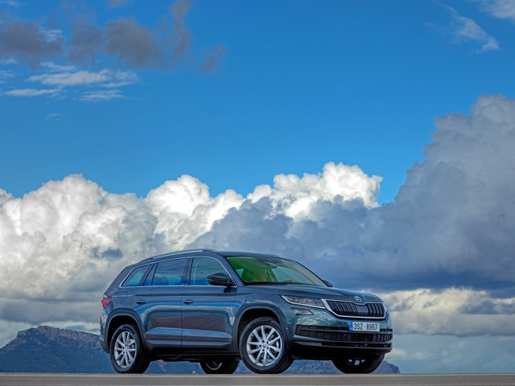
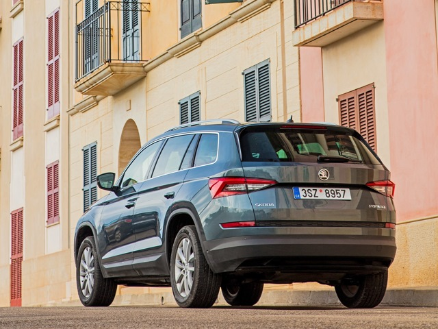
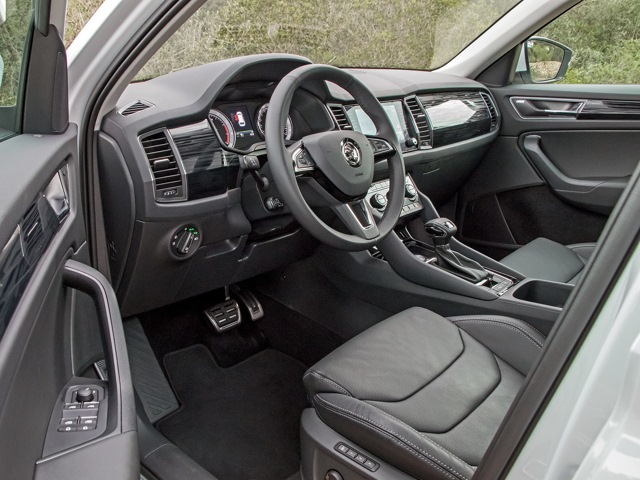

Skoda Kodiaq



Описание товара
Выпускается с 2016 года. Двадцать три базовые комплектации. Цены от 1 454 000 до 2 842 000 руб.
Двигатель от 1.4 до 2.0, бензиновый и дизельный. Привод передний и полный. КПП: механическая и роботизированная.
Технические характеристики
- Двигатель — бензиновый (1984 см³)
- Мощность — 180 л. с.
- Крутящий момент двигателя — 320 Н·м
- Коробка передач — роботизированная (7 ступеней)
- Привод — полный
- Разгон до сотни — 8 секунд
- Максимальная скорость — 207 км/ч
- Расход топлива (л/100 км) — 9.1 / 6.4 / 7.4
город / трасса / смешанный
Кузов
- Дорожный просвет — 194 мм
- Габариты (длина × ширина × высота) — 4697 × 1882 × 1655
- Колёсная база — 2791 мм
- Объём багажника — 593 л
- Объём багажника максимальный — 1980 л
- Объём топливного бака — 60 л
- Масса автомобиля — 1695 кг
Все права защищены © 2019